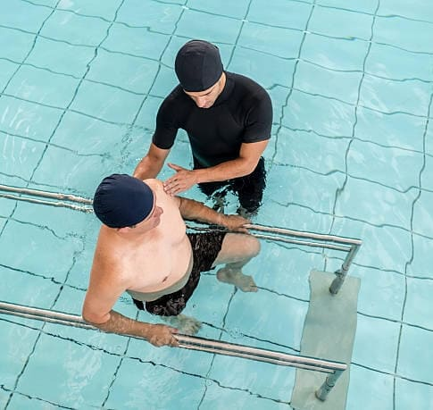
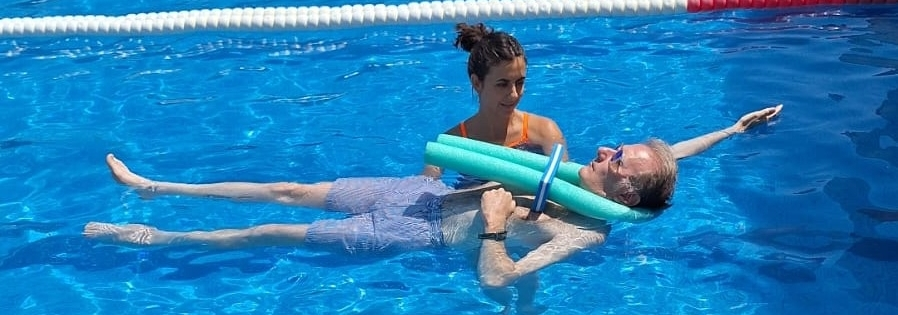
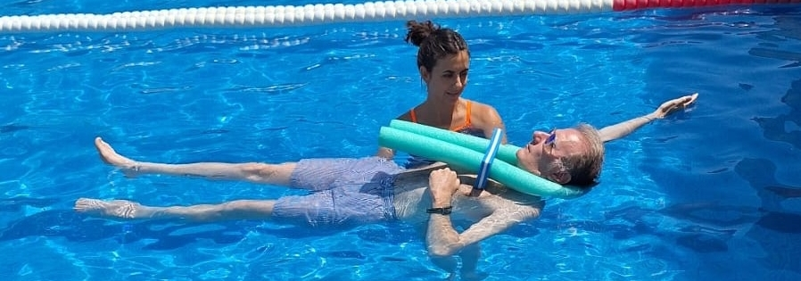

FISIOTERAPIA ACUÁTICA
El agua es tu mejor aliada para la rehabilitación. Nuestras sesiones de fisioterapia acuática están pensadas para quienes necesitan aliviar dolores, mejorar la movilidad o recuperarse de lesiones. Con la ayuda de profesionales especializados, utilizamos técnicas adaptadas a cada necesidad, aprovechando las propiedades del agua para garantizar una recuperación cómoda y efectiva.
¿QUERÉS SABER MÁS?
Recuperación efectiva con menor impacto: El agua ofrece un entorno seguro y sin gravedad que facilita la rehabilitación de lesiones musculares, articulares y óseas. Al disminuir la presión sobre el cuerpo, permite realizar movimientos de manera más suave y progresiva, reduciendo el dolor y acelerando el proceso de recuperación.
Mejora la movilidad y fortalece los músculos: A través de ejercicios específicos, ayudamos a mejorar la amplitud de movimiento, la fuerza y la resistencia. La combinación de flotación y resistencia acuática permite trabajar distintas zonas del cuerpo sin generar estrés en las articulaciones, favoreciendo una recuperación integral.
Acompañamiento profesional y personalizado: Nuestras sesiones son guiadas por especialistas en fisioterapia acuática, quienes diseñan programas adaptados a las necesidades de cada persona. Ya sea para rehabilitación postquirúrgica, tratamiento de afecciones crónicas o mejora de la calidad de vida, nuestro equipo brinda un seguimiento cercano para garantizar resultados óptimos.
 
